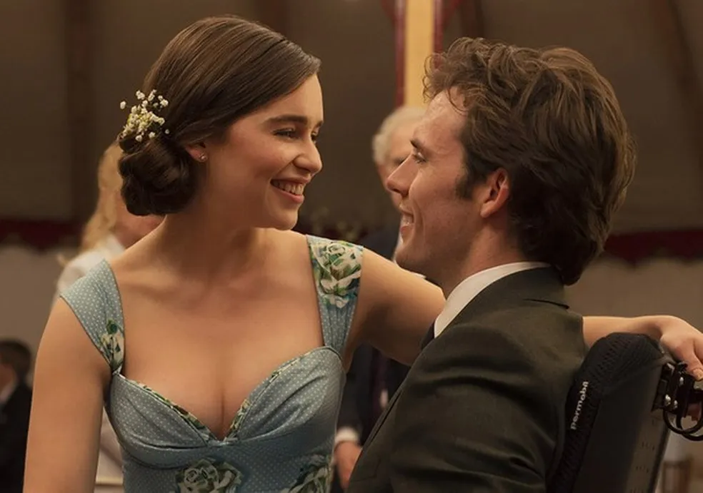

é uma história de amor e uma história de família, mas acima de tudo é uma história sobre a coragem e o esforço necessários para retomar a vida quando tudo parece acabado.
Na trama, Louisa Clark é contratada como cuidadora de Will, um homem rico que se torna extremamente cínico perante à vida após ficar tetraplégico por conta de um acidente. Louisa faz de tudo para retomar a alegria de viver de Will, e os dois se tornam muito próximos.
esse filme é lindo pois esse romance é verdadeiro porque ele era depressivo e desanimado e ela mostrou para ele que ele não esta sozinho
